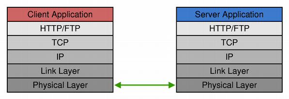
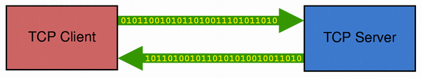
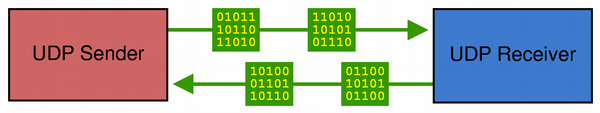

| Home · All Classes · Main Classes · Annotated · Grouped Classes · Functions |
The network module offers classes to make network programming easier and portable. It offers both high-level classes such as QHttp and QFtp that implement specific application-level protocols, and lower-level classes such as QTcpSocket, QTcpServer, and QUdpSocket, that enable you to write your own TCP/IP clients and servers.
This document is an overview of the main classes in the network module. See the individual classes' reference documentation for details.
HTTP (Hypertext Transfer Protocol) is an application-level network protocol used mainly for downloading HTML and XML files, but it is also used as a high-level transport protocol for any types of data. For example, HTTP is often used for transferring purchase orders over the Internet. In contrast, FTP (File Transfer Protocol) is a protocol used almost exclusively for browsing remote directories and transferring files.

HTTP is a simpler protocol than FTP in many ways. It uses only one network connection, while FTP uses two (one for sending commands, and one for transferring data). HTTP is a stateless protocol; requests and responses are always self-contained. The FTP protocol has a state and requires the client to send several commands before the file transfer takes place.
In practice, HTTP clients often use separate connections for separate requests, whereas FTP clients establish one connection and keep it open throughout the session.
The QHttp and QFtp classes provide client-side support for HTTP and FTP. Since the two protocols are used to solve the same problems, the QHttp and QFtp classes have many features in common:
There are two main ways of using QHttp and QFtp. The most common approach is to keep track of the command IDs and follow the execution of every command by connecting to the appropriate signals. The other approach is to schedule all commands at once and only connect to the done() signal, which is emitted when all scheduled commands have been executed. The first approach requires more work, but it gives you more control over the execution of individual commands and allows you to initiate new commands based on the result of a previous command. It also enables you to provide detailed feedback to the user.
The HTTP and FTP examples illustrate how to write an HTTP and an FTP client.
Writing your own HTTP or FTP server is possible using the lower-level classes QTcpSocket and QTcpServer.
TCP (Transmission Control Protocol) is a low-level network protocol used by most Internet protocols, including HTTP and FTP, for data transfer. It is a reliable, stream-oriented, connection-oriented transport protocol. It is especially well suited for continuous transmission of data.

The QTcpSocket class provides an interface for TCP. You can use QTcpSocket to implement standard network protocols such as POP3, SMTP, and NNTP, as well as custom protocols.
A TCP connection must be established to a remote host and port before any data transfer can begin. Once the connection has been established, the IP address and port of the peer are available through QTcpSocket::peerAddress() and QTcpSocket::peerPort(). At any time, the peer can close the connection, and data transfer will then stop immediately.
QTcpSocket works asynchronously and emits signals to report status changes and errors, just like QHttp and QFtp. It relies on the event loop to detect incoming data and to automatically flush outgoing data. You can write data to the socket using QTcpSocket::write(), and read data using QTcpSocket::read(). QTcpSocket represents two independent streams of data: one for reading and one for writing.
Since QTcpSocket inherits QIODevice, you can use it with QTextStream and QDataStream. When reading from a QTcpSocket, you must make sure that enough data is available by calling QTcpSocket::bytesAvailable() beforehand.
If you need to handle incoming TCP connections (e.g., in a server application), use the QTcpServer class. Call QTcpServer::listen() to set up the server, and connect to the QTcpServer::newConnection() signal, which is emitted once for every client that connects. In your slot, call QTcpServer::nextPendingConnection() to accept the connection and use the returned QTcpSocket to communicate with the client.
Although most of its functions work asynchronously, it's possible to use QTcpSocket synchronously (i.e., blocking). The trick is to call QTcpSocket's waitFor...() functions, which suspend the calling thread until a signal has been emitted. For example, after calling the non-blocking QTcpSocket::connectToHost() function, call QTcpSocket::waitForConnected() to block the thread until the connected() signal has been emitted.
Synchronous sockets often lead to code with a simpler control flow. The main disadvantage of the waitFor...() approach is that events won't be processed while a waitFor...() function is blocked. If used in the GUI thread, this might freeze the application's user interface. For this reason, we recommend that you use synchronous sockets only in non-GUI threads. When used synchronously, QTcpSocket doesn't require an event loop.
The Fortune Client and Fortune Server examples show how to use QTcpSocket and QTcpServer to write TCP client-server applications. See also Blocking Fortune Client for an example on how to use a synchronous QTcpSocket in a separate thread (without using an event loop), and Threaded Fortune Server for an example of a multithreaded TCP server with one thread per active client.
UDP (User Datagram Protocol) is a lightweight, unreliable, datagram-oriented, connectionless protocol. It can be used when reliability isn't important. For example, a server that reports the time of day could choose UDP. If a datagram with the time of day is lost, the client can simply make another request.

The QUdpSocket class allows you to send and receive UDP datagrams. It inherits QAbstractSocket, and it therefore shares most of QTcpSocket's interface. The main difference is that QUdpSocket transfers data as datagrams instead of as a continuous stream of data. In short, a datagram is a data packet of limited size (normally smaller than 512 bytes), containing the IP address and port of the datagram's sender and receiver in addition to the data being transferred.
QUdpSocket supports IPv4 broadcasting. Broadcasting is often used to implement network discovery protocols, such as finding which host on the network has the most free hard disk space. One host broadcasts a datagram to the network that all other hosts receive. Each host that receives a request then sends a reply back to the sender with its current amount of free disk space. The originator waits until it has received replies from all hosts, and can then choose the server with most free space to store data. To broadcast a datagram, simply send it to the special address QHostAddress::Broadcast (255.255.255.255), or to your local network's broadcast address.
QUdpSocket::bind() prepares the socket for accepting incoming datagrams, much like QTcpServer::listen() for TCP servers. Whenever one or more datagrams arrive, QUdpSocket emits the readyRead() signal. Call QUdpSocket::readDatagram() to read the datagram.
The Broadcast Sender and Broadcast Receiver examples show how to write a UDP sender and a UDP receiver using Qt.
Before establishing a network connection, QTcpSocket and QUdpSocket perform a name lookup, translating the host name you're connecting to into an IP address. This operation is usually performed using the DNS (Domain Name Service) protocol.
QHostInfo provides a static function that lets you perform such a lookup yourself. By passing a host name to QHostInfo::lookupHost() with a host name, a QObject pointer, and a slot signature, QHostInfo will perform the name lookup and invoke the given slot when the results are ready. The actual lookup is done in a separate thread, making use of the operating system's own methods for performing name lookups.
QHostInfo also provides a static function called QHostInfo::fromName() that takes the host name as argument and returns the results. In this case, the name lookup is performed in the same thread as the caller. This overload is useful for non-GUI applications or for doing name lookups in a separate, non-GUI thread. (Calling this function in a GUI thread may cause your user interface to freeze while the function performs the lookup.)
| Copyright © 2005 Trolltech | Trademarks | Qt 4.0.0 |